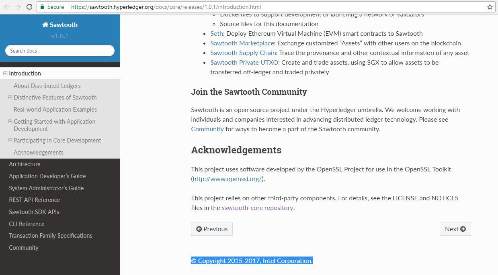

Is hyperledger sawtooth under apache or intel corporation?
Hyperledger sawtooth is maintained by Apache or Inter corporation?

At the footer there is intel corporation, if we want to move the project to production which is built on Hyperledger sawtooth, do we need to pay to intel?
Answer
Hyperledger Sawtooth is open source software, and is free to download and use.
The project was initially created by Intel, as blockchain software using Intel SGX CPU instructions to implement PoET (Proof of Elapsed Time) consensus. Intel then donated it to the Hyperledger Foundation as open source software, under the Apache 2.0 open source license. Developers from Intel and many other companies and individuals are members of the Hyperledger community and contribute to the Sawtooth project.
The Hyperledger Foundation is a global collaborative organisation 'created to advance cross-industry blockchain technologies' which incubates and supports several open source blockchain projects. It was launched in 2016 as part of the Linux Foundation, similar to the CNCF and Cloud Foundry.